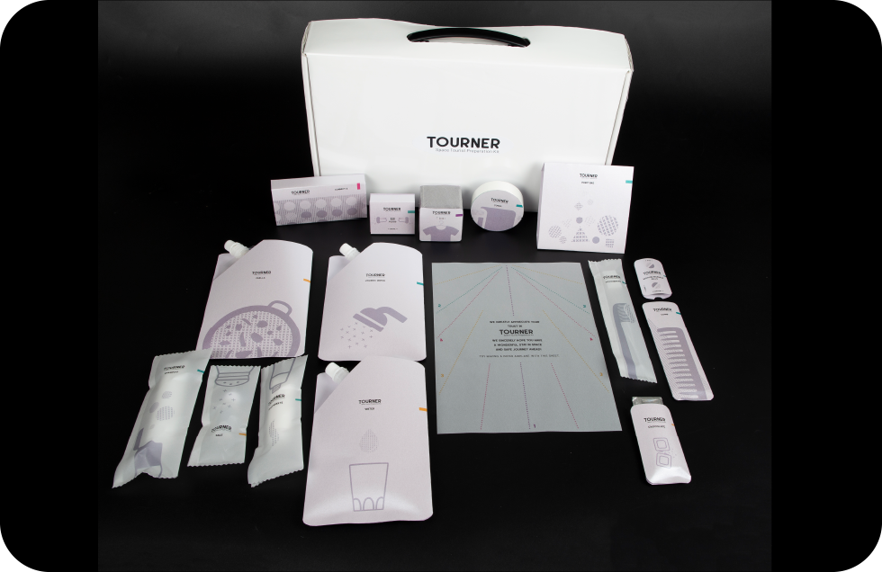
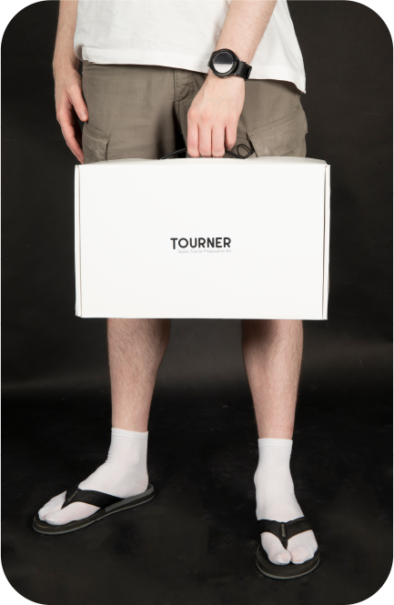
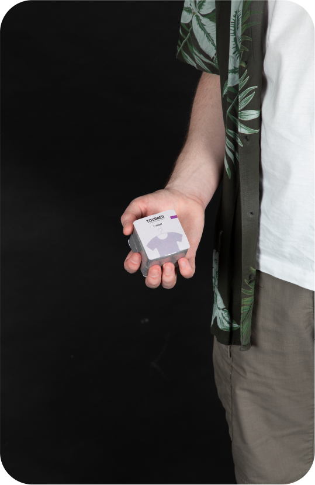
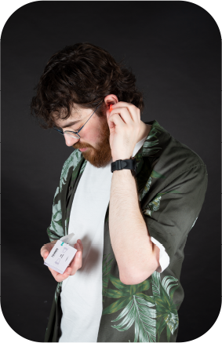
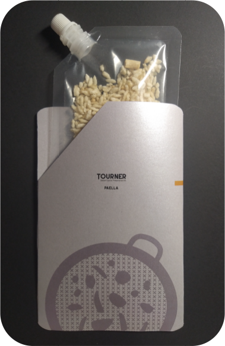

TOURNER
Mi proyecto "Tourner: Kit Previsto a una Experiencia de Turismo Especial", se centra en la creación de un kit que facilita humanizar el proceso de reserva en un sitio especial.
Mis piezas gráficas ayudan a destacar con los nombres de los siguientes productos, además de un packaging visualmente limpio. Estos elementos están pensados para una experiencia completa.




